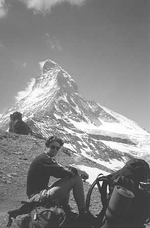

I awoke from my pleasant snooze, following the North Face of the Col du Plan, to Tom muttering the likes of "SE facing...must clear quickly...would put in the next two or three days...perfect". Curiosity got the better of me and I asked exactly what he was talking about. "The Central Pillar of Freney!" replied Tom. At first I thought he must be joking - we were supposed to be acclimatising - but whether he was or not we soon had each other sorting out some things. Gear wise there wasn't much choice, we only had a few nuts, half a dozen extenders and a couple of Friends with us. Plenty of ice screws though! "Lets see how heavy our sacks would feel..." was the last thing I remember Tom saying before picking them up and heading for the telepherique station!!
The walk across the Vallee Blanche was gruelling. Our sacks were heavy from the mountain of food required to keep the pair of us going. [Tom and I had only recently commented on the fact that neither of us had had to face a competing appetite (I think we were discussing the last spoonful of our last meal) and were taking no chances!] Soon however we were on the final ice slope leading to the Trident hut and were somewhat surprised to find we were the only occupants that night. We enjoyed a relaxing afternoon in the sun inspecting the route to the Col de Peuterey, which looked horribly exposed and steep. As we gorged our mountain of food we privately contemplated tomorrow's objective. I nervously anticipated a good day ahead but the approach, under the Brenva face and up the rock stained NE face of the Col de Peuterey, certainly caused the hairs on my neck to stand on end!
It needn't have. Starting at 1am, we reached the Col at 5am with the minimum of fuss. Actually, that's a load of bollocks come to think of it - Tom managed to vanish into the depths of a huge bergschrund; we had to pick our way through a massive funnel of avalanche debris under the Brenva Face and finally there was the problem of overcoming a seemingly impossible, overhanging bergschrund a third of the way up the NE face of the Col de Peuterey. All three provoked thoughts of turning back but we were still up to time and had negotiated the obstacles before the thoughts turned into action. Furthermore, the slope up to the Col was much less steep than we had anticipated, being little more than a snow plod.
Ahead of time at the Col we dug ourselves a windbreak and settled down to have a brew and wait for sunrise. It was here we met the only two people we saw between the Vallee Blanche and the summit of Mont Blanc - the Freney face certainly felt every bit as remote as its reputation suggested.
Watching daybreak turn into sunrise was a marvellous spectacle of colours and growing warmth. There was no mistaking the line of our route as the face turned from a cold grey to a warm orange - every feature of the Pillar was sharply highlighted. In minutes the face took on an altogether more friendly persona and we packed our gear up and set off once again - sometime in the next hour I found myself climbing above 4000m for the first time.
The first couple of pitches involved fairly straightforward mixed work until a steep rock wall marked the first of the harder pitches. Rock boots were donned and Tom led off up an awkward crack and exposed traverse. Climbing with big sacks was an instant shock to the system but the pitches were superb, if a little iced up at times and we were both enjoying the situation. The harder pitches were interspersed by easier ledges and ramp lines which were still very snowy but we continued to climb in our rock boots. Frontpointing in Ninjas is not to be recommended (especially Tom's, whose knackered specimens kept coming off) but it got us there (precariously!).
Pitch after pitch led slowly upwards, the glacier below never seeming to get farther away. Pitches varied from immaculate granite cracks, ribs and slabs to iced up, dripping overhangs where gear placements required extensive excavation! Unfortunately, around the middle of the morning the sunshine vanished in swirls of thickening cloud. I don't need to tell anyone with knowledge of the history of the Central Pillar what began to go through my mind as the cloud closed in and the wind picked up. Our upward progress became that little bit more urgent and our thoughts turned to getting snuggled up in a warm bivvy bag with some steaming pasta and pesto - yum!yum! However, when we arrived a couple of pitches below the Chandelle we wasted a lot of time unsuccessfully looking for "the good bivvy site". To make matters worse I had declared that the normal route to the Chandelle was impossible due to unstable fresh snow. Tom's suspicions about the weather were being confirmed too by several rumbles of thunder. Neither of us said anything, but our faces must have had "Oh shit!" written all over them.

Tom at the base of the Matterhorn
Photo: Amos Preminger
Tom went ahead to investigate the impassability, announcing on his return "Of course we'll get across!". I remained unconvinced, particularly when Tom promptly dug himself a deep stance in the soft snow and put me back on belay! I took a deep breath, tried not to notice the huge drops down either side of the crest and gingerly began a 10m traverse on steep sugary snow. I felt nauseous with exposure, convinced that the snow couldn't possible take my weight and just managed to uncover and clip an old peg before my nerves caused my brain to explode! Things began looking up and I belayed Tom to the base of the Chandelle. Still no bivvy site had appeared and our last hope lay on top of a detached pillar which looked desperate to get onto (a quick look at the guide would have solved this mystery so much earlier!). I had the first go trying a wide chimney before escaping around an arete to try an overhanging iced up crack. Before long I was lowered off defeated. Tom attacked the chimney again and this time a combination of cold, tiredness, stubbornness and sheer fury got him onto the ledge. His first words were "This has to be some sort of sick joke!" and my heart sank rapidly.
It was well after dark when I finally struggled onto our ledge which was about the size of a small karrimat but covered in a layer of hard, and more to the point slippery, ice. We cleared off most of the ice and arranged our gear in a vague order before clipping into the safety rope and diving into our bivvy bags. A couple of brews was all we managed before beginning the long wait till sunrise. I alternated between periods of uncontrollable shivering and gazing at the horizon for any sign of the morning (none came for a long time!). I wish I could say I woke to a fine morning but I hadn't slept a wink - the morning was fine though.
Spirits were reinflated though and, while the crux pitches were immediately above us, we had decided to haul our sacks thus making the climbing easier and, more importantly, quicker. Tom shot off up the first pitch of the day - delightful flakes and jamming cracks, and I took my turn on a long traverse across a very exposed slab (which, in hindsight was a little reminiscent of The Moon, at Gogarth) before disappearing around an series of overhangs to secure myself at the base of the famous roof capped corner/chimney. Tom joined me and began the assault on the corner. Our gear ran out below the roof and it was left to me to get in a tangle of ropes and slings as I swung up into the chimney and then out across the roof to emerge onto a welcome ledge and into the even more welcome sunshine. The main difficulties were behind us and four more gentle pitches led to the top of the Chandelle.
On the penultimate pitch I watched in horror as one of Toms rock boots tumbled back down the route. Almost immediately the other one followed and I realised he had obviously chosen to retire his tattered boots in fine style. Unfortunately, upon nearing the stance he exclaimed that they had both fallen off! He provided me with some long- winded explanation of how they finally parted company with his feet but I had to take it with a pinch of salt - coming from the man who didn't notice his plastic outer fall off on Glover's Chimney, Ben Nevis!
A short abseil and we were on the final mixed slopes to the top of Mont Blanc de Courmayeur. These slopes consisted of a few sections of reasonable ice but more usually the sugary snow which we were now getting well acquainted with. They also seemed to go on...and on...and on. It was late afternoon when we reached the summit ridge, and it too seemed to go on...and on...and on! By the time we reached the deserted summit of Mont Blanc we were exhausted, hungry and dehydrated. It was however possible to savour what were stunning evening views and my first acquaintance with the highest point in Europe. In less than an hour we had collapsed into the Vallot hut, devouring our pasta and pesto, washed down with copious quantities of melted snow. Before long we had curled up, warm and watered, on our comfortable mattresses and drifted into deep sleep. Of course such comfortable nights have a habit of going all too quickly and were soon forced to get up and face the arduous descent back to the Plan de l'Aiguille.
It was after I returned home that I acquired a copy of Chris Bonnington's "I Chose to Climb" from my local library. In it, I read the account of the first ascent of the Pillar. Most fascinating was that many of the details, and especially the worries, Bonnington remembered from his own ascent were identical to our own - from the solitude at the Trident hut, the nervousness about the approach to the Col de Peuterey to the relief at finally having the summit in sight. We missed out on the bottle of wine - but it may reassure some to know that the spirit of adventure which has been said to wane on many of the famous "trade routes" can still be captured and cherished.